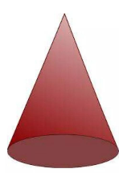

חרוט — דף מלווה המחשה
ציוד: פלסטלינה, קשיות השוות באורכן, מספריים, דף שבו מצוירים מעגלים.
• צרו מהפלסטלינה נחש, והניחו אותו על היקף המעגל.
• הניחו מספר קשיות כך שקצה אחד של הקשית יונח על שפת המעגל.
• חברו את כל הקצוות האחרים לנקודה אחת, ולאחר מכן חברו אותם עם כדור קטן של פלסטלינה.
1. א. מה קיבלתם?
ב. מה מאפיין את הצורה שקיבלתם?
2. אילו חפצים אתם מכירים שנראים בצורה זו?
הצורה שקיבלתם נקראת חרוט.
3. א. תארו במילים שלכם איך יצרתם את החרוט?
ב. התבוננו בחרוטים שבנו חברי הקבוצה. כתבו אילו צורות הנדסיות בונות את החרוט?

מאגר מושגים — השלימו בעזרתם את ההגדרה
עיגול · קודקוד · קו יוצר · גובה
השלימו את הגדרת החרוט
חרוט הוא גוף תלת־ממדי הנוצר מחיבור נקודה שמחוץ למישור הבסיס עם כל נקודות המעגל שעל היקף הבסיס.
לבסיס צורת , ולחרוט קודקוד יחיד מחוץ למישור הבסיס.
כל הקטעים המחברים את שפת הבסיס לקודקוד נקראים ויוצרים את מעטפת החרוט.
האנך המורד מקודקוד החרוט אל מרכז הבסיס נקרא גובה החרוט.
אם נשתמש באותו מעגל פלסטלינה בבסיס אך נחליף את הקשיות לקשיות ארוכות יותר — מה ישתנה בחרוט ומה יישאר ללא שינוי? (התייחסו לגובה, לשיפוע המעטפת, לרדיוס הבסיס ולהיקף הבסיס)